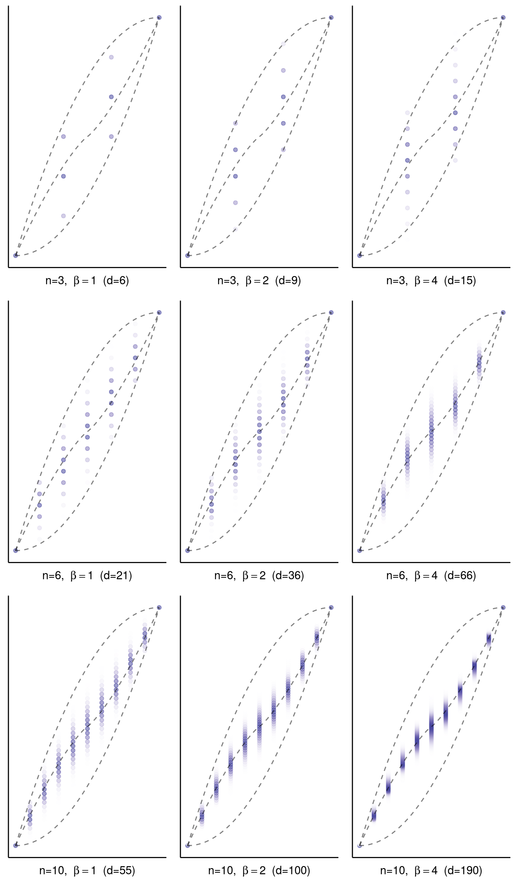

In this note we study the curvature measures of symmetric cones through the distribution of the Gaussian orthogonal/unitary/symplectic ensemble conditioned on the index function, that is, on the number of positive eigenvalues.
Our approach follows closely the approach of reconstructing the conic intrinsic volumes from the corresponding bivariate chi-bar-squared distribution. We will assume familiarity with this approach, which is explained in the vignette Estimating conic intrinsic volumes from bivariate chi-bar-squared data from the conivol package.
We present the connection between the curvature measures and the index constrained Gaussian orthogonal/unitary/symplectic ensemble without proof; for more information and references, see (Amelunxen and Bürgisser 2015). One motivation for this study is its connection with the problem of predicting the rank of the solution of a random semidefinite program. This connection is explained in the final section of this note.
In an appendix we present an observation about a possible connection between the curvature measures of semidefinite cones and the algebraic degree of semidefinite programming.
Some plots in this study require longer computations and are included as image files; the code for getting the data and for constructing these images is provided in this technical note.
Vignettes from the conivol package:
Symmetric cones are self-dual convex cones with a transitive group of symmetries. Every symmetric cone decomposes into an orthogonal sum of a finite number of simple symmetric cones, which consist of
The first four points each describe families of cones, while the last one is just a single exceptional cone. The Lorentz cones have a very simple structure (arguably the simplest kind of convex cones, which are not linear subspaces) and do not have the kind of structure that we focus on in this note. We also do not discuss the exceptional symmetric cone. So “symmetric cone” in this note is synonymous to a cone of positive semidefinite real symmetric/complex unitary/quaternion unitary matrices of a certain format.
We use the Dyson index \(\beta\in\{1,2,4\}\) to indicate whether the ground field is real (\(\beta=1\)), complex (\(\beta=2\)), or quaternion (\(\beta=4\)); we denote the size of the matrices by \(n\). The set of real symmetric/complex unitary/quaternion unitary matrices form a Euclidean space \(\mathcal{E}\) of dimension \[ d = n + \beta\binom{n}{2} = \frac{\beta}{2} n^2 \cdot \begin{cases} (1+\frac{1}{n}) & \text{if } \beta=1 \\ 1 & \text{if } \beta=2 \\ (1-\frac{1}{2n}) & \text{if } \beta=4 . \end{cases} \] The Gaussian orthogonal/symmetric/unitary ensemble, which we denote by \(\text{G}\beta\text{E}\), is the standard normal distribution on \(\mathcal{E}\) (after choosing some orthonormal basis in \(\mathcal{E}\), the distribution can be found by taking iid standard normal random variables for the resulting coordinates). This distribution on \(\mathcal{E}\) induces a distribution on the Weyl chamber \[ \{x\in\text{R}^n\mid x_1\leq x_2\leq\dots\leq x_n \} , \] through the function that maps a matrix \(A\in\mathcal{E}\) to its vector of ordered eigenvalues \(\text{eig}(A)\). We slightly abuse notation and also denote this induced distribution on the Weyl chamber by \(\text{G}\beta\text{E}\) (from the context it is clear whether we are talking about matrices or eigenvalues; we will mostly be talking about the eigenvalues). The Euclidean norm on \(\mathcal{E}\) can be expressed through the eigenvalues; in fact, it is given by the Euclidean norm of the eigenvalues, \(\|A\|_F=\|\text{eig}(A)\|=\|\text{eig}(A)\|_2\). (We use the notation \(\|A\|_F\) to emphasize that we are not taking the usual operator norm but the Frobenius norm, which is the Euclidean norm in matrix space.)
We denote the cone of positive semidefinite matrices by \(\mathcal{C}\subset\mathcal{E}\). The rank decomposition of \(\mathcal{E}\) induces a rank decomposition of \(\mathcal{C}\), which we denote by \[ \mathcal{C} = \bigcup_{r=0}^n M_r . \] While the rank function is important, we will focus in this note on the index function that counts the number of positive entries in a vector, \[ \text{ind}(x)=(\text{number of positive entries in }x) . \] Instead of the rank we can also use the index function to describe the strata of \(\mathcal{C}\), \[ M_r = \{A\in \mathcal{C}\mid \text{ind}(\text{eig}(A))=r \} . \]
The intrinsic volumes of a convex cone, and also the curvature measures that we will analyze here, can be described through corresponding (bivariate) chi-bar-squared distributions. For this we denote the orthogonal projection on the cone \(\mathcal{C}\) by \(\Pi_{\mathcal{C}}\colon\mathcal{E}\to \mathcal{C}\), \[ \Pi_{\mathcal{C}}(A) = \text{argmin}\{ \|A-B\|_F \mid B\in \mathcal{C} \} . \] It is easily verified that the eigenvalues of the projection on the positive semidefinite cone \(\mathcal{C}\) and on its polar cone \(\mathcal{C}^\circ=-\mathcal{C}\) are given by \[ \text{eig}\big(\Pi_{\mathcal{C}}(A)\big) = \big(\text{eig}(A)\big)_+ ,\quad \text{eig}\big(\Pi_{\mathcal{C}^\circ}(A)\big) = \big(\text{eig}(A)\big)_- , \] where in \((x)_+=:x_+\) all negative entries of \(x\) are replaced by zero, and similarly in \((x)_-=:x_-\) all positive entries of \(x\) are replaced by zero. To simplify the notation we will now focus on the eigenvalues of the matrices.
The bivariate chi-bar-squared distribution of \(\mathcal{C}\) is the distribution of the pair \[ \big(\|x_+\|^2,\|x_-\|^2\big) ,\quad x\sim \text{G}\beta\text{E} . \] The connection to the intrinsic volumes \(v_k:=v_k(\mathcal{C})\), \(0\leq k\leq d\), is given by an alternative way to describe this distribution: Let the discrete random variable \(Z\in\{0,\ldots,d\}\) be described by the probabilities \[ \text{Prob}(Z=k) = v_k , \] then \((X_+,X_-)\) defined by the conditional distributions \[ X_+\mid Z\sim \chi_Z^2,\quad X_-\mid Z\sim \chi_{d-Z}^2 ,\quad X_+\mid Z,\; X_-\mid Z \text{ independent} , \] has the same distribution as \(\big(\|x_+\|^2,\|x_-\|^2\big)\). This property, known as the generalized Steiner formula, provides a characterization of the intrinsic volumes.
The curvature measures \(\Phi_{kr} := \Phi_k(\mathcal{C},M_r)\) allow for a similar characterization if the \(\text{G}\beta\text{E}\) is conditioned on the index. More precisely, if \(\emptyset\neq R\subseteq\{0,\ldots,n\}\), then the pair \[ \big(\|x_+\|^2,\|x_-\|^2\big) ,\quad x\sim \big( \text{G}\beta\text{E}\mid\text{ind}(x)\in R \big) \] has the same distribution as \((X_+,X_-)\), hierarchically defined via \[ X_+\mid Z\sim \chi_Z^2,\quad X_-\mid Z\sim \chi_{d-Z}^2 ,\quad X_+\mid Z,\; X_-\mid Z \text{ independent} , \] where the latent variable \(Z\) has the probabilities \[ \text{Prob}(Z=k) = \frac{\sum_{r\in R} \Phi_{kr}}{\sum_{\ell=0}^d \sum_{r\in R} \Phi_{\ell r}} . \] Again, this property, a consequence of a localized form of the generalized Steiner formula, characterizes the curvature measures \(\Phi_{kr}\).
Note that for \(R=\{0,\ldots,n\}\) we obtain the intrinsic volumes, \[ \sum_{r=0}^n \Phi_{kr}=v_k . \] On the other hand, summing over the “dimension” parameter \(k\) yields the distribution of the index function, \[ \sum_{k=0}^d \Phi_{kr} = \text{Prob}\{\text{ind}(x)=r\} ,\quad x\sim \text{G}\beta\text{E} . \] Yet another characterization of the curvature measures is obtained through the rank distribution of the solution of a (Gaussian) random semidefinite program; see the final section of this note for more details.
Asymptotically, we obtain for \(n\to\infty\) and \(r_n,k_n\) such that \(\frac{r_n}{n}\to\rho\in[0,1]\) and \(\frac{k_n}{d}\to\kappa\in[0,1]\), the inequalities \[ \rho^2 \leq \kappa\leq 1-(1-\rho)^2 ,\quad \text{for } \beta=1,2,4 . \] We illustrate these inequalities for \(n=3,6,10\), \(\beta=1,2,4\): (the asymptotic bounds \((\frac{r}{n})^2 \leq \frac{k}{d} \leq 1-(1-\frac{r}{n})^2\) are indicated by the dashed curves)
The goal of this study is to analyze the distribution of the curvature measures within this Pataki range.
It is known that the index concentrates sharply around \(n/2\), and it is also known that the intrinsic volumes concentrate sharply around \(d/2\). So the unnormalized curvature measures concentrate in both parameters, \(r\) and \(k\), around \(n/2\) and \(d/2\), respectively. We will thus focus on the conditional distributions \[\begin{align*} \Phi^{\text{ind}}_r & := \frac{(\Phi_{0r},\ldots,\Phi_{dr})}{\sum_{\ell=0}^d \Phi_{\ell r}} = \frac{(\Phi_{0r},\ldots,\Phi_{dr})}{\text{Prob}\{\text{ind}(x)=r\}} , \\ \Phi^{\text{dim}}_k & := \frac{(\Phi_{k0},\ldots,\Phi_{kn})}{\sum_{s=0}^n \Phi_{ks}} = \frac{(\Phi_{k0},\ldots,\Phi_{kn})}{v_k}, \end{align*}\]which we call the “index normalized” and the “dimension normalized” distributions. The dimension normalized distributions are particularly important for the application in semidefinite programming, as explained in the final section of this note.
As explained above, by restricting the index to be equal to \(r\), that is, \(R=\{r\}\), we obtain the connection between the conditioned eigenvalue distribution \(\text{G}\beta\text{E}\mid \text{ind}=r\) and the index normalized curvature measures \(\Phi^{\text{ind}}_{kr}\) via \[ \big(\|x_+\|^2,\|x_-\|^2\big) \stackrel{\text{dist}}{=} \sum_{k=0}^d 1_{Z=k}\big(X_k,Y_{d-k}\big) , \] where \(x\sim \text{G}\beta\text{E}\mid \text{ind}=r\), \(\text{Prob}(Z=k)=\Phi^{\text{ind}}_{kr}\), and \(X_k,Y_k\sim\chi_k^2\), where \(Z,X_k,Y_k\) independent.
We can reconstruct these numbers as weights from a bivariate chi-bar-squared distribution, as described in the vignette Estimating conic intrinsic volumes from bivariate chi-bar-squared data from the conivol package, assuming that we have samples from the conditioned eigenvalue distribution \(\text{G}\beta\text{E}\mid \text{ind}=r\). Below we will discuss the details for these sampling and reconstruction procedures.
What remains to be addressed is the question how to obtain the other normalization, the dimension normalized curvature measures. This question is subtle, and if one tries to do this step in a “brute force” way, for example by reconstructing the unnormalized curvature measures first and then renormalizing these, then one will inevitably fail due to the mentioned double concentration behavior of the curvature measures.
Note that what we actually only need is the ratio of neighboring curvature measures, \(\Phi^{\text{dim}}_{k,r+1}/\Phi^{\text{dim}}_{kr}\), because of the additional normalization \(\sum_r \Phi^{\text{dim}}_{kr}=1\). Now, we can write this in terms of the corresponding ratios of the index normalized curvature measures as follows: \[ \frac{\Phi^{\text{dim}}_{k,r+1}}{\Phi^{\text{dim}}_{kr}} = \frac{\Phi_{k,r+1}}{\Phi_{kr}} = \frac{\Phi^{\text{ind}}_{k,r+1}}{\Phi^{\text{ind}}_{kr}} \frac{\text{Prob}\{\text{ind}(x)=r+1\}}{\text{Prob}\{\text{ind}(x)=r\}} . \] All that we need to know is thus the ratio of the probabilities \(\text{Prob}\{\text{ind}(x)=r+1\}\) and \(\text{Prob}\{\text{ind}(x)=r\}\). We can find this ratio by sampling from the conditioned eigenvalue distribution \(\text{G}\beta\text{E}\mid \text{ind}\in\{r,r+1\}\). More precisely, if we have \(N^{(r)}\) samples from this distribution, of which \(N^{(r)}_0\) have index \(r\) and \(N^{(r)}_1\) have index \(r+1\), then the ratio \(N^{(r)}_1/N^{(r)}_0\) is an unbiased estimate for the above probability ratio.
This gives us the following procedure for the renormalization step (we work with the logarithm to avoid lengthy products): for fixed \(k\),
Moreover, we can use this to approximate the values of \(\phi_r\), \[ \phi_r + \log\Phi^{\text{ind}}_{kr_0} - \beta n^2 f(\tfrac{r_0}{n}) \approx \log\Phi^{\text{ind}}_{kr} - \beta n^2 f(\tfrac{r}{n}) . \] We will use this approach below when looking ahead with artificial data.
Having explained the general approach, it remains to implement the computations, which consist of three parts:
The difficulty of the first step lies again in the concentration effects. A random vector from the \(\text{G}\beta\text{E}\) will have its index close to \(n/2\) with high probability, making a simple rejection sampler (sample from \(\text{G}\beta\text{E}\) then reject if the index is not in the required range) a practically infeasible approach. Instead we will use the Hamiltonian Monte-Carlo sampler Stan (wikipedia) for this task.
The second step is solved by adapting the expectation maximization (EM) approach for reconstructing the intrinsic volumes to the situation at hand. The required changes are minimal and and described below.
The third step is just an implementation of the computation as explained above.
The sampler Stan works solely through the log-likelihood function, which only has to be given up to additive constant (so the normalizing constant for the density does not have to be specified). Concretely, the density of \(x\sim\text{G}\beta\text{E}\) is given by \[ p(x) \propto e^{-\|x\|^2/2} \prod_{i<j} \big|x_i-x_j\big|^\beta . \] The corresponding log-likelihood is easily computed in Stan; the restriction on the index are realized by grouping the ordered eigenvalues into “positive”, “free”, “negative” and by requiring that the positive and negative ones do not change sign and the free eigenvalues lie between these two groups.
Concretely, if \(n=40\) and the index shall lie between \(25\) and \(35\), then we assume that the eigenvalues \(x_1\leq x_2 \leq \dots \leq x_{40}\) are grouped into \(5\) eigenvalues with negative sign, \(x_1,\ldots,x_5\), \(10\) eigenvalues with no prescribed sign, \(x_6,\ldots,x_{15}\), and the remaining \(25\) eigenvalues with positive sign, \(x_{16},\ldots,x_{40}\).
The function constr_eigval from the symconivol package generates the Stan model for the index constrained eigenvalue distribution. The models are slightly different for whether there are “positive”, “free”, or “negative”, eigenvalues allowed. Passing this to the Stan sampler and then running it with the data (the Dyson index \(\beta\) and the numbers of positive/free/negative eigenvalues) yields samples from the resulting index constrained eigenvalue distribution.
Example computations:
The following lines will construct a model for negative, free, and positive eigenvalues, then run it for \(5\) negative, \(10\) free, and \(25\) positive eigenvalues, and then extract the sampled eigenvalues:
filename <- "tmp.stan"
M <- constr_eigval( beta=1, n=40, ind_low=25, ind_upp=35, filename=filename )
stan_samp <- stan( file = filename, data = M$data, chains = 1, warmup = 1e3,
iter = 1e5, cores = 2, refresh = 1e4 )
file.remove(filename)
samp <- list( ep = rstan::extract(stan_samp)$ep,
ef = rstan::extract(stan_samp)$ef,
en = rstan::extract(stan_samp)$en )The resulting empirical eigenvalue distribution(s) look as follows:
To illustrate the different situations we illustrate these empirical eigenvalue distributions for some more values for the parameters:
The weights of a bivariate chi-bar-squared distribution can be reconstructed as described in the vignette Estimating conic intrinsic volumes from bivariate chi-bar-squared data from the conivol package. We explain again the main idea behind this algorithm in the specific context of curvature measures.
In the following we will assume that the index constraints are of the form \(r\leq \text{ind}(x)\leq r+s\), that is, \(R=\{r,\ldots,r+s\}\), and we assume \(0< r< n\) and \(0\leq s< n-r\). We assume strict inequalities so that we can assume that the positive and negative components of the eigenvalue vector are always nonzero (the cases of all positive or all negative eigenvalues are not interesting for the index/dimension normalized curvature measures). As explained above, we can turn a sample from the index constrained Gaussian orthogonal/unitary/symplectic ensemble into a sample from the bivariate chi-bar-squared distribution by taking the squared norms of the positive and negative components, \[ (X,Y) = \big( \|x_+\|^2, \|x_-\|^2 \big) . \] The distribution of \((X,Y)\) can then be described in terms of the latent variable \(Z\), \[ \text{Prob}(Z=k) = \frac{\sum_{j=0}^s \Phi_{k,r+j}}{\sum_{\ell=1}^{d-1} \sum_{j=0}^s \Phi_{\ell,r+j}} , \] through the conditional distributions \[ X\mid Z\sim \chi_Z^2,\quad Y\mid Z\sim \chi_{d-Z}^2 ,\quad X\mid Z,\; Y\mid Z \text{ independent} . \]
The Pataki bounds show that \(\sum_{j=0}^s \Phi_{k,r+j}\) is nonzero iff \[ r+\beta\binom{r}{2} \leq k \leq d - \Big( n-r-s + \beta \binom{n-r-s}{2} \Big) . \] In particular, since we assume that \(0<r<n\) and \(s<n-r\), the latent variable \(Z\) will not take the values \(0\) or \(d\) with positive probability. So the latent variable is indeed entirely hidden, which is different from the intrinsic volumes case.
Assuming that we have \(N\) samples \((\mathbf{X},\mathbf{Y})=\big((X_1,Y_1),\ldots,(X_N,Y_N)\big)\), the likelihood function, up to normalizing constant, is given by \[ L(\Phi\mid \mathbf{X},\mathbf{Y}) \propto \prod_{i=1}^N \sum_{k=1}^{d-1} f_{ik}\sum_{j=0}^s\Phi_{k,r+j} ,\qquad f_{ik} = f_k(X_i) f_{d-k}(Y_i) , \] where \(f_k(x)\) denotes the density of the chi-squared distribution, \(f_k(x)\propto x^{k/2-1}e^{-x/2}\). Taking the latent variable into account, we obtain \[\begin{align*} L(\Phi\mid \mathbf{X},\mathbf{Y},\mathbf{Z}) & \propto \prod_{i=1}^N \Big( f_{iZ_i}\sum_{j=0}^s\Phi_{Z_i,r+j} \Big) , \\ \log L(\Phi\mid \mathbf{X},\mathbf{Y},\mathbf{Z}) & = \underbrace{\sum_{i=1}^N \log f_{iZ_i}}_{\text{(indep. of $\Phi$)}} + \sum_{i=1}^N \log\Big(\sum_{j=0}^s\Phi_{Z_i,r+j}\Big) + \text{const} . \end{align*}\] The EM algorithm tries to find the maximum likelihood estimate of the parameters of the latent variable by maximizing the conditional likelihood function, with the likelihood of the data expressed in the latent variable, which are conditioned on the current iterate. Concretely, we express the posterior density for the \(i\)th latent variable in the form \[\begin{align*} p\big(Z_i=k\mid X_i=x_i,Y_i=y_i\big) & = \frac{p\big(X_i=x_i,Y_i=y_i\mid Z_i=k\big)\,p\big(Z_i=k\big)}{p(X_i=x_i,Y_i=y_i)} \\ & = \frac{f_{ik} \sum_{j=0}^s\Phi_{k,r+j}\big/\sum_{\ell=1}^{d-1}\sum_{j=0}^s\Phi_{\ell,r+j}} {\sum_{\ell=1}^{d-1}f_{i\ell}\sum_{j=0}^s\Phi_{\ell,r+j} \big/\sum_{\ell=1}^{d-1}\sum_{j=0}^s\Phi_{\ell,r+j}} \\ & = \frac{f_{ik} \sum_{j=0}^s\Phi_{k,r+j}} {\sum_{\ell=1}^{d-1}f_{i\ell}\sum_{j=0}^s\Phi_{\ell,r+j}} . \end{align*}\] The EM algorithm then finds the \((t+1)\)th iterate \(\Phi^{(t+1)}\) from the \(t\)th iterate \(\Phi^{(t)}\) by maximizing the following function in \(\Phi\): \[\begin{align*} \underset{\mathbf{Z}\mid \mathbf{X},\mathbf{Y},\Phi^{(t)}}{\text{E}} \big[\log L\big(\Phi \,\big|\, \mathbf{X},\mathbf{Y}, \mathbf{Z} \big)\big] & = \sum_{i=1}^N \sum_{k=1}^{d-1} \frac{f_{ik} \sum_{j=0}^s\Phi_{k,r+j}^{(t)}} {\sum_{\ell=1}^{d-1}f_{i\ell}\sum_{j=0}^s\Phi_{\ell,r+j}^{(t)}} \log\Big(\sum_{j=0}^s\Phi_{k,r+j}\Big) + \text{const} . \end{align*}\]This function, which we divide by the number of samples to achieve a convergence of the constants, \[ F(a_1,\ldots,a_{d-1}) =
\sum_{k=1}^{d-1} \bigg( \frac{1}{N} \sum_{i=1}^N
\frac{f_{ik} \sum_{j=0}^s\Phi_{k,r+j}^{(t)}}
{\sum_{\ell=1}^{d-1}f_{i\ell}\sum_{j=0}^s\Phi_{\ell,r+j}^{(t)}}\bigg)
\log a_k , \] can be maximized over the probability simplex as a separable convex program. In the symconivol package this is achieved via MOSEK.
So this will be one step of the EM algorithm.
Log-concavity: In the case of intrinsic volumes it has turned out that assuming log-concavity is essential for obtaining a stable convergence of the EM algorithm. Recall that a sequence \(a_0,a_1,\ldots,a_d\) of positive numbers is log-concave if \[ \log a_k \geq \frac{\log a_{k-1} + \log a_{k+1}}{2} . \] These inequalities can be easily enforced in the EM algorithm by projecting the vector of the logarithm onto the convex cone formed by these sequences.
In the case of intrinsic volumes the validity of these inequalities is a well-established conjecture. In the case of the curvature measures this is less well tested. Nevertheless, we will enforce log-concavity when reconstructing the curvature measures as this will stabilize the EM algorithm, and because it seems to be a reasonable assumption that improves the whole procedure work.
Example computations:
We evaluate the index constrained eigenvalue data from above with \[ \beta=1 ,\; n=40 ,\; r=25 ,\; s=10 . \] Let’s have a look at the Pataki bounds for these values:
beta <- 1
n <- 40
r <- 25
s <- 10
pat <- pat_bnd(beta,n)
print(str_c("dimension: d=", pat$d))
#> [1] "dimension: d=820"
print(str_c("Pataki bounds: ",pat$k_low(r),", ",pat$k_upp(r+s)))
#> [1] "Pataki bounds: 325, 805"The following lines transform the eigenvalue data first into bivariate chi-bar-squared data, then evaluate the densities for the EM algorithm, and then run the EM algorithm for \(100\) iterations. The list samp was obtained in the previous section.
# convert sample data to bivariate chi-bar-squared data:
m_samp <- constr_eigval_to_bcbsq(samp)
# prepare data for EM algorithm:
data <- prepare_em_cm(d=pat$d, low=pat$k_low(r), upp=pat$k_upp(r+s), m_samp=m_samp)
# run EM algorithm for 100 steps:
em <- estim_em_cm(d=pat$d, low=pat$k_low(r), upp=pat$k_upp(r+s), m_samp=m_samp, N=100,
data=data, no_of_lcc_projections = 1)
# display some iterates of the EM algorithm
tib_plot <- as_tibble( t(em[1+10*(0:10), ]) ) %>%
add_column(k=pat$k_low(r):pat$k_upp(r+s),.before=1) %>% gather(step,value,2:12)
G <- ggplot(tib_plot,aes(x=k,y=value,color=step)) +
geom_line() + theme_bw() +
theme(legend.position="none", axis.title.x=element_blank(), axis.title.y=element_blank())The resulting plot looks as follows:
We can use this method to shed some light on the Pataki range, as displayed above for \(n=3,6,10\). For the index normalized curvature measures we obtain the following picture:

The dashed curves indicate the asymptotic Patali range and Leigh’s curve, which we describe below in more details. Notice the apparent convergence of the index constrained curvature measures to this curve.
For the reconstruction of the dimension normalized curvature measures we proceed as described above.
Example computations:
We reconstruct the same range again as above, \(n=3,6,10\):
We observe again a concentration behavior, but with a limit curve which is apparently different from the limit curve of the index constrained curvature measures. The indicated curve is a guess for this limit curve, based on Leigh’s curve and the rate function of the index probabilities. See below for details on how we derived this curve (it should be noted that this curve is based on a rather broad assumption, and an “eye-balled” value for an essential parameter defining the curve). This curve is interesting because it can be used to predict the rank of the solution of semidefinite programs (see below).
In this sectioin we try to get a better insight in the higher dimensional behavior of the dimension normalized curvature measures. We will do this by using known and conjectured assumptions about the general behavior of the curvature measures. More precisely, while it is known (see (Goldstein, Nourdin, and Peccati 2017)) that the intrinsic volumes of the semidefinite cones follow a central limit theorem, that is, they approximate the normal distribution in high dimensions, this is so far not known to hold for the index normalized curvature measures. It is nevertheless a reasonable assumption to make that they, too, obey a central limit law. We will make this assumption in this section to get an idea about what happens in higher dimensions for the dimension normalized curvature measures.
In (Majumdar et al. 2011) it was shown that \[ \log\text{Prob}\{\text{ind}(x)=r\} \approx -\beta n^2 R(\tfrac{r}{n}) + \text{const}(d) , \] for some rate function \(R\), for which they give an explicit formula (see below for details on the calculation of \(R\)). The graphs of the rate function \(R\) and its derivative look as follows:
Using this, we can approximate the probability ratio as follows: \[\begin{align*} \log\Big(\frac{\text{Prob}\{\text{ind}(x)=r+1\}}{\text{Prob}\{\text{ind}(x)=r\}}\Big) & \approx -2d \big( R(\tfrac{r+1}{n})-R(\tfrac{r}{n})\big) \approx \frac{-2d}{n}\, R'(\tfrac{r}{n}) . \end{align*}\](We use \(2d\) instead of \(\beta n^2\), as this visibly improves the approximations below.) The following plots compare the empirically estimated log of the ratio of probabilities for neighboring indices with the approximate asymptotic expressions (the estimate through the derivative of the rate function is depicted as the red dashed curve):
Before considering the curvature measures, we mention that the variance of the intrinsic volumes \(v=(\sum_r \Phi_{kr})\) have a variance of approximating \(d\big(\frac{8}{\pi^2}-\frac{1}{2}\big)\). More precisely, this was shown in (McCoy and Tropp 2014) for \(\beta=1\), but as the following estimates using the bivariate chi-bar-squared distribution suggest, the formula should also hold for \(\beta=2,4\).
So far, no asymptotic estimates for the variance of the index normalized curvature measures are known. We obtain the following plots for the estimated values:
The above plots show the normalized empirical variance of \(\Phi^{\text{ind}}_{kr}\), that is, the curves are given by \[ \bigg( \frac{r}{n} ,\, \frac{\sum_k k^2 \Phi^{\text{ind}}_{kr} - \big(\sum_k k \Phi^{\text{ind}}_{kr}\big)^2}{d} \bigg) \qquad \Big[ \text{in gray:}\quad \big(\rho,\,0.2\big(1-\big|2\rho-1\big|\big)\big) \Big] . \] The constant \(0.2\) is eye-balled from the plots, and probably incorrect. But it seems justified to assume that the variance of the index constrained curvature measures can be approximated in the form \[ C\,d\,\big(1-\big|\tfrac{2r}{n}-1\big|\big) , \] for some constant \(C\) (\(\approx 0.2\)).
Combining the assumption of a central limit law for the index normalized curvature measures with the above guess for their variance, we obtain a guesstimate of \[ \log \Phi^{\text{ind}}_{kr} \approx - d \frac{\big(\frac{k}{d}-\ell(\frac{r}{n})\big)^2}{2C\big(1-\big|\tfrac{2r}{n}-1\big|\big)} , \] where \(\ell(\rho)\) denotes Leigh’s curve (see below for details), and where we use the estimate \(C=0.2\). We can renormalize these using the rate function of the index probabilities, \[ \log\text{Prob}\{\text{ind}(x)=r\} \approx -2d\, R(\tfrac{r}{n}) + \text{const}(d) , \] which results in the following pictures for the estimated dimension normalized curvature measures:
We can compute the limit curve for the dimension normalized curvature measures in terms of the estimated constant \(C\), and of course relying on the two main assumptions that
The limit curve of the dimension normalized curvature measures (found through their modes) is given by the maximum of this function in \(r\). Substituting \(\rho:=\frac{r}{n}\) and \(\kappa:=\frac{k}{d}\), we see that the curve is described through the minimum (in \(\rho\)) of \[ \frac{(\kappa-\ell(\rho))^2}{1-|2\rho-1|} + 4C\, R(\rho) ,\quad 1-\sqrt(1-\kappa) \leq \rho \leq \sqrt(\kappa) . \] We can find these minima via a simple table lookup procedure. The resulting curves (for different values of \(C\)) look as follows:
In this section we provide more details about the rate function and Leigh’s curve. These are given and derived from (Majumdar et al. 2011), whose formulas we reproduce and illustrate here.
It is well known that the empirical distribution function of the eigenvalues, \[ \frac{1}{n} \sum_{j=1}^n\delta_{x_j}(t) ,\quad (x_1,\ldots,x_n) \sim \text{G}\beta\text{E} , \] approximates a semi-circle distribution in high dimensions. More precisely, in order to obtain this limit one has to rescale the eigenvalues by \(1/\sqrt{n}\), and in order to obtain the limit distribution independent of the Dyson index, one additionally rescales by by \(1/\sqrt{\beta}\): \[ g(t) = \frac{1}{n} \sum_{j=1}^n\delta_{y_j}(t) ,\quad y=\frac{x}{\sqrt{\beta n}} ,\quad x \sim \text{G}\beta\text{E} , \] converges almost surely to the semicircle distribution with support \([-\sqrt{2},\sqrt{2}]\). Before modifying this model to the case of a fixed index ratio, let us have a look at some example cases to illustrate this wonderful classical result.
Example computations:
We find the empirical distribution through iterated sampling (sample size \(10^5\)). For \(n=10\) we obtain the following picture:
For \(n=40\) the convergence becomes evident:
The case of a fixed index ratio was considered in (Majumdar et al. 2011); they considered the empirical distribution function \[ g_r(t) = \frac{1}{n} \sum_{j=1}^n\delta_{y_j}(t) ,\quad y=\frac{x}{\sqrt{\beta n}} ,\quad x \sim \text{G}\beta\text{E}\mid\text{ind}=r , \] and found the limit distribution for the case \(\frac{r}{n}\to \rho\). (The semicircle is found in the case \(\rho=1/2\).)
Denoting the limit distribution by \(g_\rho^*\), by symmetry, we have \(g_\rho^*(t)=g_{1-\rho}^*(-t)\), and for \(\frac{1}{2}\leq \rho\leq 1\) the distribution \(g_\rho^*\) can be found as follows:
Example computations:
We illustrate the asymptotics for the fixed ratio case as in the case of the semicircle. For \(\rho=0.6\) we obtain for \(n=10\):
For \(n=40\) the convergence becomes evident:
Similarly, for \(\rho=0.8\) we obtain for \(n=10\):
For \(n=40\) we obtain the following picture:
with \(b\) and \(L\) as defined above. The rate function \(R(\rho)\) is accessible via rate() from the symconivol package. See above for plots of \(R(\rho)\) and its derivative.
leigh() from the symconivol package. It can be expressed in terms of elliptic integrals in the following way:
\[\begin{align*}
\ell(\rho) & = \rho + \frac{3b(1+b)\sqrt{1+2b}}{\pi(1+b+b^2)^2} \bigg(
E\Big(\sqrt{\frac{1-b^2}{1+2b}}\Big)
- \frac{2+b}{3} K\Big(\sqrt{\frac{1-b^2}{1+2b}}\Big) \bigg) .
\end{align*}\]
Here is a plot of this curve:
The dashed curves indicate as usual the (asymptotic) Pataki range. We conjecture, and it seems apparent from the example computations above, that the index normalized curvature measures converge to Leigh’s curve, \[ \lim_{n\to\infty} \sum_{k\leq \kappa d}\Phi^{\text{ind}}_{k,\text{round}(\rho n)} \stackrel{(?)}{=} \begin{cases} 0 & \text{if } \kappa<\ell(\rho) \\ 1 & \text{if } \kappa>\ell(\rho) . \end{cases} \] Similarly, denoting the curve that we derived above for the dimension normalized curvature measures (relying on some assumptions about the higher dimensional behavior of the curvature measures) by \(\mu(\kappa)\), that is, \[ \mu(\kappa) = \text{argmin}\Big\{ \frac{(\kappa-\ell(\rho))^2}{1-|2\rho-1|} + 4C\, R(\rho) \,\Big|\; 1-\sqrt{1-\kappa} \leq \rho \leq \sqrt{\kappa} \Big\} , \] we conjecture that the dimension normalized curvature measures converge to this curve, \[ \lim_{n\to\infty} \sum_{r\leq \rho n}\Phi^{\text{dim}}_{\text{round}(\kappa d),r} \stackrel{(?)}{=} \begin{cases} 0 & \text{if } \rho<\mu(\kappa) \\ 1 & \text{if } \rho>\mu(\kappa) . \end{cases} \]
Generally speaking, a conic program with reference cone \(\mathcal{C}\) is maximizing (or minimizing) a linear functional over the intersection of the (closed convex) cone \(\mathcal{C}\) with an affine linear subspace of codimension \(k\) (generically, the subspace is given by \(k\) linear equations). A natural random model for this setup is to assume that
Of course, as is the case for every random model used for analyzing an algorithm, there are complaints about the applicability of the model to “real-world” situations. But the described model is a natural model to start with, and once this is understood one might think of extending it (maybe there is a “universality law”; or if there isn’t, one might investigate what factors are key for influencing the model to show a different behavior).
In (Amelunxen and Bürgisser 2015) it was shown that the probabilities for the random conic program being infeasible or unbounded are given in terms of the intrinsic volumes of the cone: \[\begin{align*} \text{Prob}\{\text{program is infeasible}\} & \sum_{j=0}^{k-1} v_j(\mathcal{C}) , \\ \text{Prob}\{\text{program is unbounded}\} & \sum_{j=k+1}^d v_j(\mathcal{C}) . \end{align*}\]Now, this result may add to the feeling that the random model is useless for real-world applications, because it implies that with high probability a random program is either infeasible or unbounded. But this conclusion is premature, as one way out of this dilemma is simply conditioning the random model to the conic program being neither infeasible nor unbounded. The same arguments as above can be used for defending this adjusted random model: it is arguably the most natural model to start with, and one may think of extending it, once its behavior is fully understood.
The random conic program conditioned on being neither infeasible nor unbounded almost surely has a unique solution, which we denote by \(S\). If we now assume that the reference cone \(\mathcal{C}\) is the curve of positive semidefinite matrices, then one may ask about the rank of the solution \(S\). These rank probabilities are given by the dimension normalized curvature measures: \[ \text{Prob}\{\text{rank}(S)=r\} = \Phi^{\text{dim}}_{rk} . \] With the above conjecture about the high-dimensional behavior of the dimension normalized curvature measures in mind, we conclude that one might use the limit curve \(\mu(\kappa)\) to predict the rank of the solution of a random semidefinite program: \[ \text{rank}(S) \approx \mu\big(\tfrac{k}{d}\big)\,n . \]
Another parameter associated to the semidefinite cone, with \(\beta=1\), and satisfying the Pataki inequalities is the algebraic degree of semidefinite programming \(\delta(m,n,r)\), defined in (Nie, Ranestad, and Sturmfels 2010). (It would be interesting to have some theory about the cases \(\beta=2,4\), but so far this seems to have not been addressed.) More precisely, \(\delta(m,n,r)\) with \(1\leq m\leq n-1\) is nonzero only if \[ r+\binom{r}{2} \leq d-m \leq d-\Big(n-r+\binom{n-r}{2}\Big) . \] Some values of the algebraic degree (for \(n\leq 14\)) are accessible via the function alg_deg() from the symconivol package. The values were computed with the formula for \(\delta(m,n,r)\) given in (Hiep 2016).
So far no connection between the curvature measures and the algebraic degree is known that goes beyond these inequalities, but empirically one may observe the same asymptotic behavior as the curvature measures. We illustrate this by looking at the normalized marginals \[ \frac{\sum_m\delta(m,n,r)}{\sum_{r,m}\delta(m,n,r)} ,\quad \frac{\sum_r\delta(m,n,r)}{\sum_{r,m}\delta(m,n,r)} , \] which we compare with the asymptotic limits of the index probabilities \(\text{Prob}(\text{ind}(r))\) and of the intrinsic volumes, respectively. That is, we compare the normalized marginals with the (normalized) rate \(\exp(-n^2R(r/n))\) and with the normal distribution with mean \(d/2\) and variance \(d\big(\frac{8}{\pi^2}-\frac{1}{2}\big)\), respectively:
In the same way we compare the two normalized measures \[ \frac{\delta(d-k,n,r)}{\sum_j\delta(d-j,n,r)} ,\quad \frac{\delta(d-k,n,r)}{\sum_s\delta(d-k,n,s)} , \] where we use the parameter \(k=d-m\) for a better comparison with the above plots for the normalized curvature measures.
Amelunxen, Dennis, and Peter Bürgisser. 2015. “Intrinsic Volumes of Symmetric Cones and Applications in Convex Programming.” Math. Program. 149 (1-2, Ser. A): 105–30. https://doi.org/10.1007/s10107-013-0740-2.
Goldstein, Larry, Ivan Nourdin, and Giovanni Peccati. 2017. “Gaussian Phase Transitions and Conic Intrinsic Volumes: Steining the Steiner Formula.” Ann. Appl. Probab. 27 (1): 1–47. doi:10.1214/16-AAP1195.
Hiep, Dang Tuan. 2016. “A Formula for the Algebraic Degree in Semidefinite Programming.” Kodai Math. J. 39 (3): 484–88. https://doi.org/10.2996/kmj/1478073765.
Majumdar, Satya N., Céline Nadal, Antonello Scardicchio, and Pierpaolo Vivo. 2011. “How Many Eigenvalues of a Gaussian Random Matrix Are Positive?” Phys. Rev. E 83 (4). American Physical Society: 041105. doi:10.1103/PhysRevE.83.041105.
McCoy, Michael B., and Joel A. Tropp. 2014. “From Steiner Formulas for Cones to Concentration of Intrinsic Volumes.” Discrete Comput. Geom. 51 (4): 926–63. doi:10.1007/s00454-014-9595-4.
Nie, Jiawang, Kristian Ranestad, and Bernd Sturmfels. 2010. “The Algebraic Degree of Semidefinite Programming.” Math. Program. 122 (2, Ser. A): 379–405. doi:10.1007/s10107-008-0253-6.
In the original paper the authors use the parameter \(a=b+1\).↩
This statement depends on the type of convergence of the empirical distribution function. In fact, the paper (Majumdar et al. 2011) is a bit nonrigorous concerning these technical details. But the close connection between the empirical distribution function and the squared norms of the positive and negative parts allows for derivations of rigorous convergence results for these from similar results for the empirical distribution function. Also note that one can write the squared norm of the eigenvalues as the trace of the squared matrix, which yields another slightly different perspective, which in the unconstrained case is well understood. Again, the difference to the classical case lies in the constraints on the index and the replacement of the negative eigenvalues with zero.↩